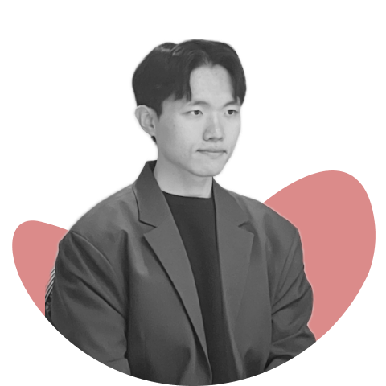

모빌리티 스타트업의 유일한 프론트엔드 개발자로 프로덕트 7개를 초기 세팅부터 운영까지 맡았고, 기획서와 디자인 가이드가 없는 제품은 UX 기획과 UI 디자인까지 맡았습니다.
설계한 화면 1건을 GUI 디자인 특허로 출원했습니다.
지금은 서버와 전사 인프라 유지보수도 함께 보고 있습니다.
차량 CAN 데이터에서 급가속·급제동 같은 이벤트를 뽑아 운전 점수를 매겨주는 서비스입니다. 사용자용 웹앱(Next.js)과 운영 어드민(SvelteKit)을 혼자 맡았습니다. 어드민은 기획서와 디자인 가이드 없이 UX 기획과 UI 디자인부터 시작했고, SvelteKit 은 동료가 제안해 처음 익혀 썼습니다.
인스타그램·유튜브·메일에 흩어진 메시지와 댓글을 한 화면에 모아 AI 로 분류하는 서비스입니다. 화면 디자인과 웹·앱 프론트엔드, OAuth 연동을 맡았고 웹 제품을 WebView 하이브리드 앱으로 확장해 App Store 에 출시했습니다. 2026.04 착수부터 코드는 대부분 AI 가 썼고, 저는 설계와 검증, 판단을 맡았습니다.
입사와 함께 차량 데이터 기반 정부 R&D 과제에 참여해 지금까지 이어가고 있습니다. 서드파티 서버부터 차량 ECU 까지 차량 데이터가 흐르는 전체 경로를 구간별로 직접 정리하며 공부했고, 여러 참여기관이 모이는 회의와 워크샵에 참여했습니다.